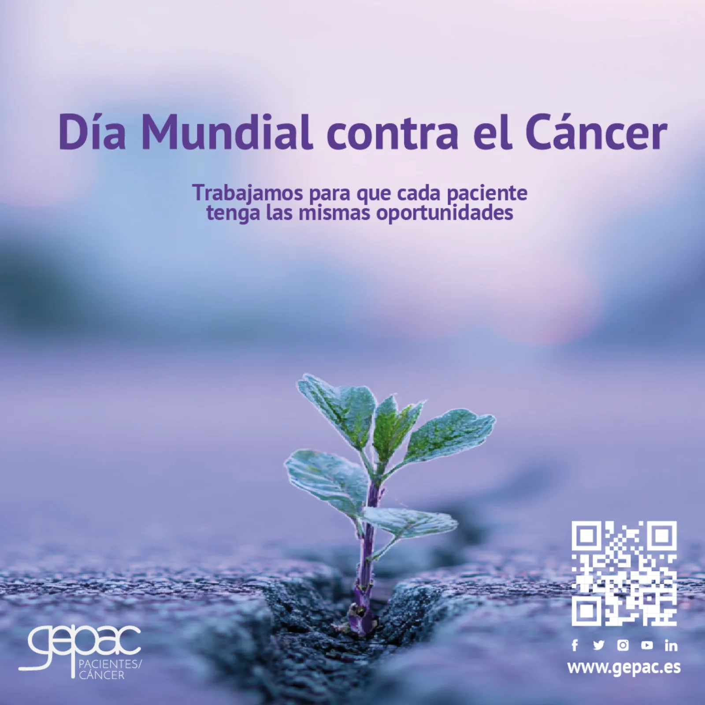

Serie GEPAC – Día Mundial contra el Cáncer El Día Mundial contra el Cáncer es cada día: una llamada a la acción permanente
Serie GEPAC – Día Mundial contra el Cáncer El Día Mundial contra el Cáncer es cada día: una llamada a la acción permanente
El pasado 4 de febrero de 2026 se conmemoró el Día Mundial contra el Cáncer, una jornada promovida internacionalmente para sensibilizar a la población sobre la enfermedad y reforzar la importancia de la prevención. Este año, la campaña global se enmarca en el lema “Unidos por lo Único”, que sitúa a la persona en el centro de la atención y recuerda que cada experiencia con el cáncer es diferente, apostando por un modelo más humano y centrado en las necesidades individuales. Además, distintas organizaciones como GEPAC han subrayado la necesidad de avanzar hacia un modelo de atención integral adaptado a pacientes y familiares, que reduzca el impacto social del cáncer mediante la investigación y la humanización de la asistencia.
El cáncer, una realidad creciente Las previsiones apuntan a que en 2026 se registrarán más de 300.000 nuevos casos de cáncer en España, lo que refleja la magnitud del reto sanitario y social que supone esta enfermedad. Ante este escenario, la concienciación no puede limitarse a una única fecha. El compromiso debe mantenerse en el tiempo para impulsar mejoras en prevención, diagnóstico, tratamientos y calidad de vida.
“El Día Mundial contra el Cáncer es todos los días” En esta línea, la comunidad oncológica insiste en que la lucha contra el cáncer exige continuidad. La Sociedad Española de Oncología Radioterápica (SEOR), que agrupa a más de 1.000 especialistas dedicados al tratamiento del cáncer, trabaja para visibilizar la importancia de los tratamientos y el acompañamiento a lo largo de todo el proceso asistencial. No en vano, la radioterapia será necesaria para alrededor del 60% de los pacientes oncológicos y contribuirá a la curación en cerca del 40% de los casos, lo que evidencia el papel clave de la innovación y la atención especializada.
El papel del movimiento asociativo Desde el Grupo Español de Pacientes con Cáncer (GEPAC) recordamos que hablar del cáncer es hablar de personas, de familias y de proyectos de vida. Por ello, el mensaje que deja esta semana es claro: la sensibilización debe ser constante, porque el cáncer no entiende de calendarios. Cada día es una oportunidad para reforzar el apoyo a quienes conviven con la enfermedad, promover la equidad en el acceso a los tratamientos y avanzar hacia un sistema sanitario más participativo y centrado en el paciente. El Día Mundial contra el Cáncer nos invita a reflexionar, pero el verdadero compromiso se construye con acciones sostenidas en el tiempo. Porque, efectivamente, el día mundial contra el cáncer es todos los días.
Forma